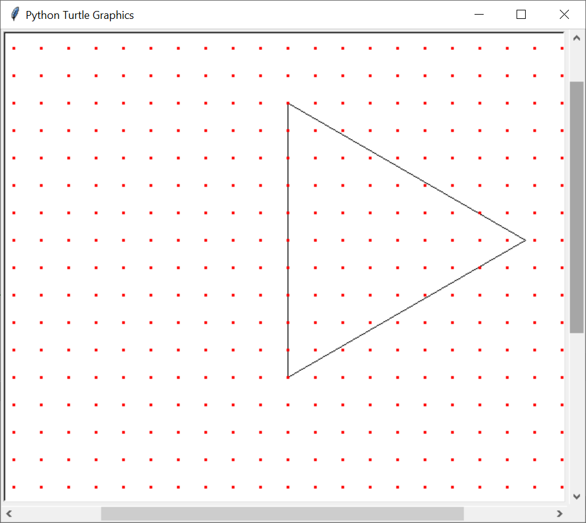
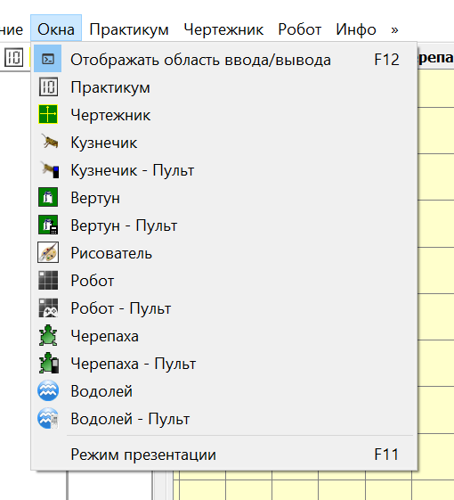
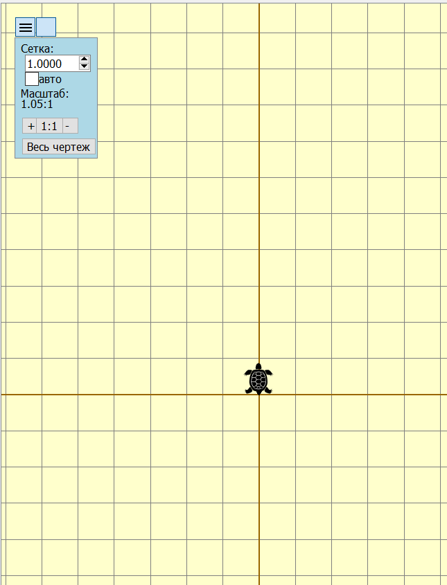
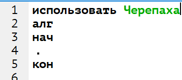
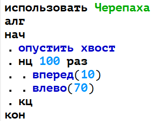
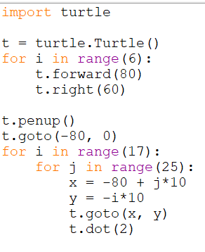

Задание 6
Вариантов, грубо говоря, два: решать через Кумир или через Python.
Решение через Python
Повтори 7 [Вперёд 12 Направо 90 Вперёд 20 Направо 90]
Поднять хвост
Вперёд 1 Направо 90 Вперёд 10 Налево 90
Опустить хвост
Повтори 7 [Вперёд 66 Направо 90 Вперёд 92 Направо 90]| Русская команда | Python команда | |
|---|---|---|
Вперёд 12 |
forward(12*m) |
|
Назад 12 |
backward(12*m) |
|
Направо 90 |
right(90) |
|
Налево 90 |
left(90) |
|
Повтори 7 [кмнд1 кмнд2 кмнд3] |
for _ in range(7): cmd1 cmd2 cmd3 |
|
Опустить хвост |
pendown() |
|
Поднять хвост |
penup() |
Пример (Python, счёт глазками)
Задача была что-то вроде посчитать количество целых точек внутри фигуры.
from turtle import*
left(90)
m = 30 # масштаб
tracer(0) # рисовать моментально
screensize(900,900)
#------------ алгоритм
down()
for _ in range(7):
forward(10*m)
right(120)
#---------------
up()
for x in range(-m,m):
for y in range(-m,m):
goto(x*m,y*m) # перемести в точку с коорд
dot(4, 'red')
update() # обновить экран
done() # чтобы не закрывалось окно с черепахойРезультат работы программы:

Решаем на Кумир
Проще всего открыть среду “Кумир”, перепечатать туда программу, включить сетку и посчитать её узлы. В настройках сетки надо указать единичный масштаб.
Как открыть поле с Черепахой:

Настройка сетки:

Не забыть “использовать Черепаха” в начале:

Пример полного текста программы:

Для сравнения, аналогичная (неполная) программа на Python:

Минусы:
- не очень быстро
- надо не забывать масштабировать, потому что минимальное разрешение — 1 пиксель